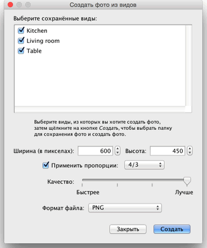

На двух лучших уровнях качества, результат зависит от расположения и мощности источников освещения. По умолчанию,
фотография расчитывается при полуденном освещении с дополнительными источниками освещения, расположенными в центре
каждой комнаты. Если вы хотите полностью контроллировать освещение в вашем доме,
уберите галочку Добавить потолочные светильники, добавьте необходимые источники освещения из категории Свет
на план дома и отрегулируйте их мощность, отредактировав соответствующий атрибут.
Мощность солнца, цвет и направление его лучей зависит от времени суток, выбранной даты, а так же от Указателя
направления на север, географического положения и часового пояса, данные параметры можно отредактировать в панели
компаса. Глобальная яркость изображения так же зависит от яркости освещения, задаваемой
в панели редактирования 3D вида.
И наконец панель Создать фото позволяет вам использовать 4 различных вида линз.
 |
|
 |
Линза По умолчанию
|
Линза Глубина резкости |
 |
|
 |
| Линза Рыбий глаз |
Сферическая линза |
Если вам необходимо создать несколько фотографий за раз, сохраните точки просмотра в меню Вид 3D >
Сохранить вид..., а затем выберите пункт меню Вид 3D > Создать фото из видов.... Вам будет предложено
диалоговое окно, в котором вы можете выбрать необходимые виды, размер, качество фотографий, формат файла для сохранения.
После нажатия кнопки Создать, будет предложено выбрать папку для сохранения фотографий. В двух максимальных
уровнях качества в пунктах выбора даты/времени и типа линзы, используемых для создания фотографий, будут стоять значения
использованные в последний раз в панели Создать фото. Если вы прежде не пользовались панелью Создать фото,
то в настройках будет стоять полдень дня создания дома.
 |